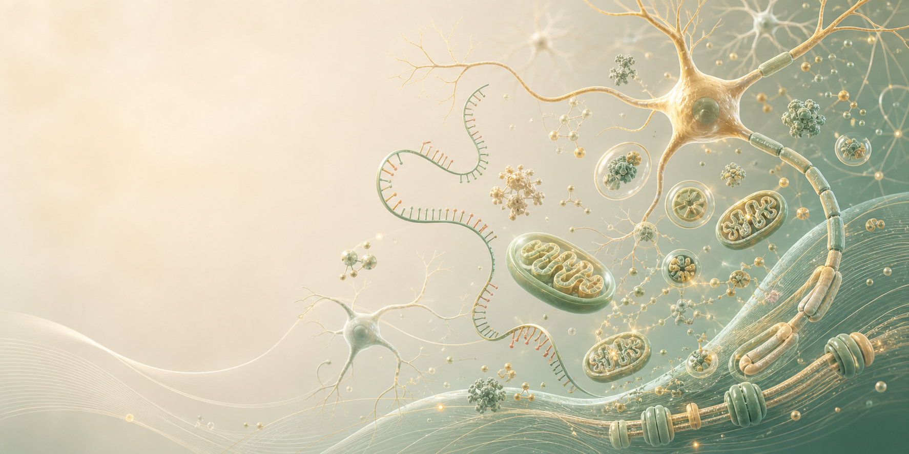
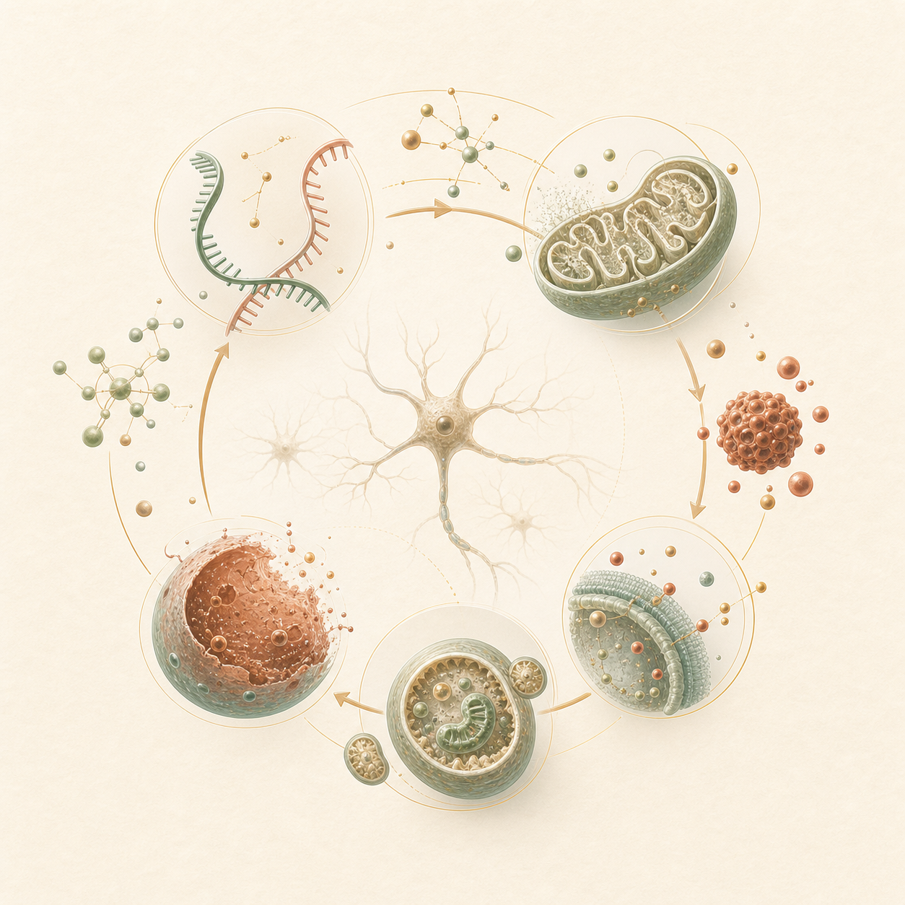

黑龙江中医药大学 · 博士后在站
开展博士后科研工作。
个人学术简历
哈尔滨医科大学 · 基础医学院 · 讲师
长期围绕神经损伤、氧化应激、自噬、铁死亡与非编码 RNA 调控机制开展研究， 关注细胞命运调控在神经退行性疾病、心血管病理重构及肝损伤修复中的作用。

Experience
从基础医学七年制培养到生理学博士训练，再到高校教学与博士后研究， 形成了基础医学、细胞生物学与疾病机制研究的连续积累。
开展博士后科研工作。
承担教学与科研工作，持续推进神经损伤、细胞命运调控等方向研究。
参与基础医学教学与科研训练。
Education
哈尔滨医科大学
哈尔滨医科大学
哈尔滨医科大学
Research Grants

Research Focus
以氧化应激和细胞稳态失衡为切入点，连接非编码 RNA、线粒体功能、 自噬与铁死亡等关键过程，解释神经损伤、心肌肥厚和组织修复中的分子机制。
项目编号：LH2024H019 · 2024.07 - 2027.07 · 10 万元 · 在研
项目编号：2023-KYYWF-0251 · 2024.01 - 2026.12 · 3 万元 · 在研
项目编号：U24A20645 · 2025.01.01 - 2028.12.31 · 260 万元 · 在研
项目编号：82370279 · 2024.01.01 - 2027.12.31 · 49 万元 · 在研
Selected Publications
International Journal of Molecular Sciences, 23(21):12891
Current Pharmaceutical Design, 27(3)
Journal of Neuroscience Research, 102(1)
Cell Death & Disease, 9(6)
Frontiers of Medicine, 18(4)